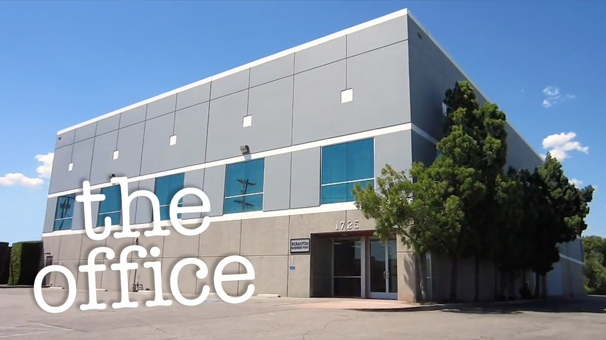
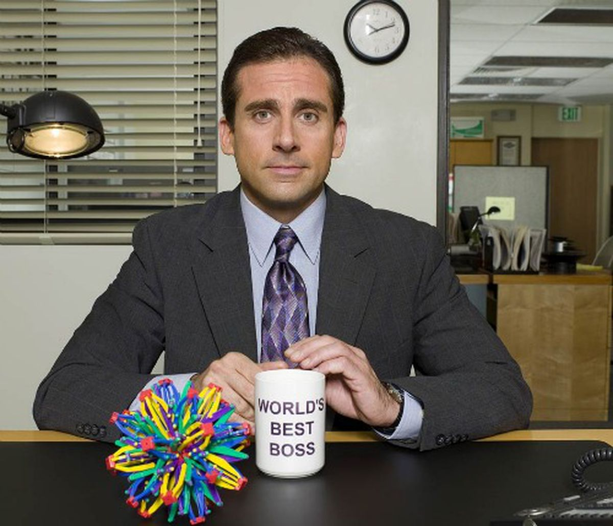
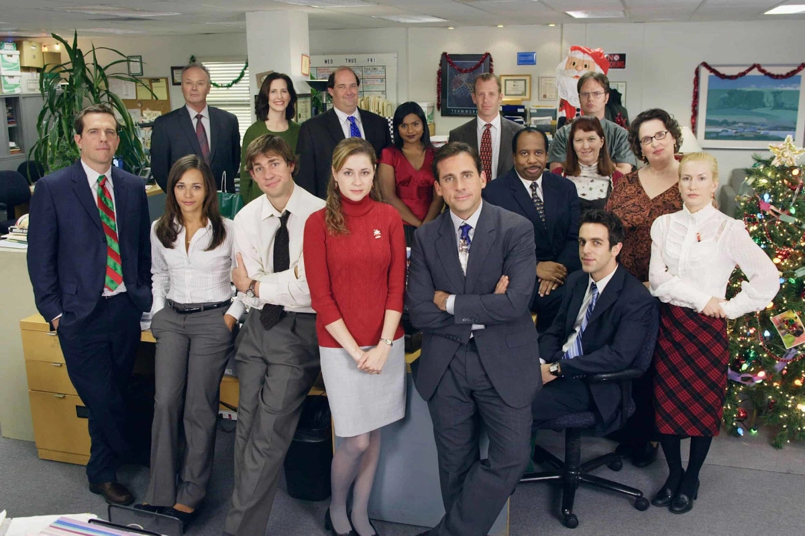

The Office
Hemen telesailaren informazio printzipala dago enuntziatuta:
Zer da?
The Office estatubatuar umorezko telesaila da, Greg Danielsek sortua. NBCk eman zuen 2005 eta 2013 artean eta hainbat sari lortu zituen. Erresuma Batuko izen bereko telesailean oinarrituta dago.
Sinopsia


Pennsylvaniako Scranton herrian dagoen paper-gauzak saltzen dituen Dunder Mifflin enpresak buruzagi bitxia du: Michael Scott.
Aktoreak

- Michael Scott: Steve Carell
- Dwight Schrute: Rainn Wilson
- Jim Halpert: John Krasinski
- Pam Beesley: Jenna Fischer
- Darryl Philbin: Craig Robinson
- Karen Filippelli: Rashida Jones
- Andy Bernard: Ed Helms
- Stanley Hudson: Leslie David Baker
- Phyllis Lapin-Vance: Phyllis Smith
- Angela Martin: Angela Kinsey
- Kevin Malone: Brian Baumgartner
- Oscar Martinez: Óscar Núñez
- Meredith Palmer: Kate Flannery
- Kelly Kapoor: Mindy Kaling
- Creed Bratton: Creed Bratton
- Erin Hannon: Ellie Kemper
- Ryan Howard: B.J. Novak
- Toby Flenderson: Paul Lieberstein
- Gabe Lewis: Zach Woods
- Holly Flax: Amy Ryan
- Robert California: James Spader
- Jan Levinson: Melora Hardin
- David Wallace: Andy Buckley
- Roy Anderson: David Denman
- Jo Bennett: Kathy Bates
Orri Nagusia